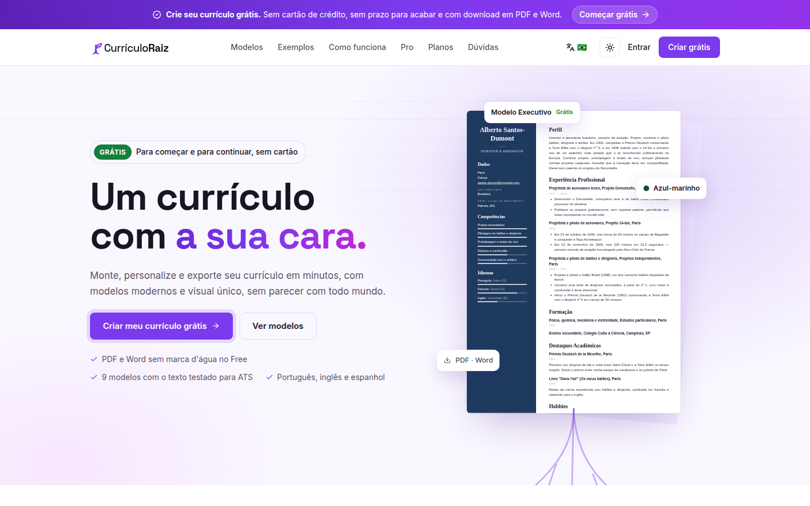
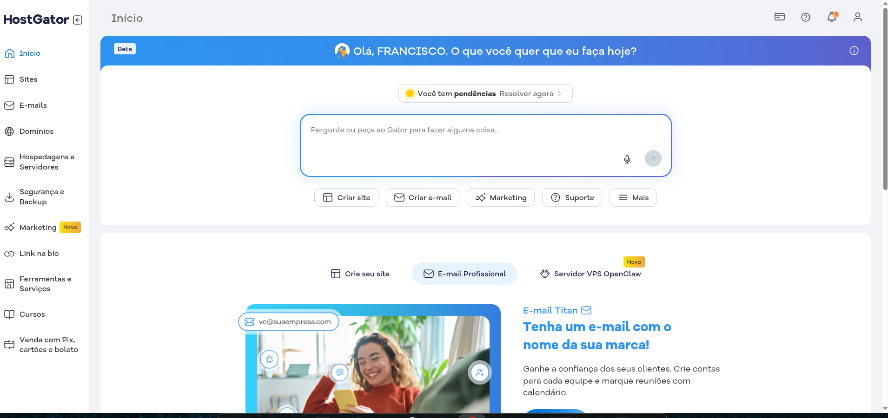
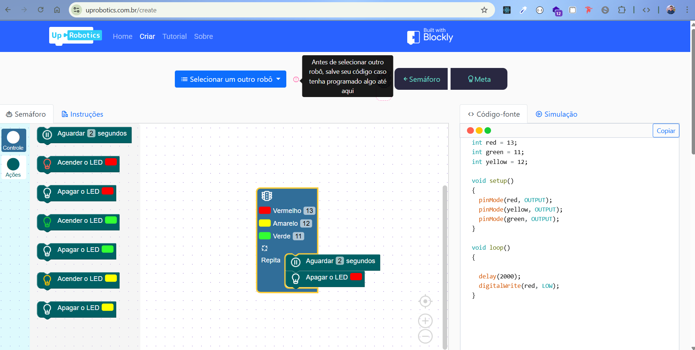

Produto próprio · fundador
CurrículoRaiz
Um SaaS para montar currículos, com 9 modelos, exportação em PDF e Word e importação do PDF do LinkedIn.
React · Node.js · Prisma · Puppeteer
Ver online (abre em nova aba)
Frontend sênior · Manaus, BR · remoto
Construo produtos em React e TypeScript peça por peça. Hoje trabalho na HostGator e mantenho o CurrículoRaiz, um SaaS que criei.
01 · A peça · 2019–2022
No mestrado da UFAM, criei o UpRobotics: blocos do Google Blockly viram código para Arduino ou uma simulação no Webots.
02 · O componente · 2021–2025
Design system compartilhado e micro-frontends no Sidia. Bibliotecas de componentes e CI/CD na Atem.
03 · O produto · 2024 até hoje
Painel do cliente e carrinho na HostGator. Antes, a plataforma de roteiristas Teksto, na O2 Filmes.
04 · O sistema próprio
O CurrículoRaiz, do qual sou fundador e principal autor: React no front, Node e Prisma na API, PDF com Puppeteer.
Ver o casoCasos
Produto próprio · fundador
Um SaaS para montar currículos, com 9 modelos, exportação em PDF e Word e importação do PDF do LinkedIn.
React · Node.js · Prisma · Puppeteer
Ver online (abre em nova aba)
HostGator · 2025 até hoje
Onde clientes acompanham métricas, gerenciam a hospedagem e pedem suporte. Trabalho nas interfaces, nos componentes do design system e nos testes.
React · Redux Saga · Jest · Design System
Ver online (abre em nova aba)
Mestrado · iComp UFAM
Programação visual de braços robóticos. A pesquisa saiu no SBIE 2022 e no SBESC 2020.
React · Google Blockly · Webots
Código no GitHub (abre em nova aba)
Também trabalhei em Teksto (O2 Filmes), no carrinho de compras da HostGator, no MBX Academy (Instituto Pecege), no portal do cliente da Atem e no site do Lab312 (UFAM).
Como eu trabalho
Design system compartilhado no Sidia, bibliotecas de componentes na Atem e o design system da HostGator hoje.
Jest e React Testing Library na HostGator. Jest na O2 Filmes.
Micro-frontends com Module Federation no Sidia. Fluxos com Redux e Saga na Atem e na O2.
Este site funciona por teclado, com movimento reduzido e sem 3D.
Trajetória
As sobreposições foram trabalhos em paralelo: a bolsa de pesquisa com o Sidia e o contrato PJ da O2 Filmes.
Recomendações no LinkedIn
cole aqui o texto real de uma recomendação, cortado em até 3 linhas
segunda recomendação real
terceira recomendação real
Perguntas de quem recruta
CLT ou PJ, confirmar com você
Moro em Manaus, no fuso UTC−4. Trabalho remoto desde 2024, confirmar
nível real, preencher com você
prazo real, preencher com você
Contato
Escolha um horário na minha agenda ou me chame pelo canal que preferir.